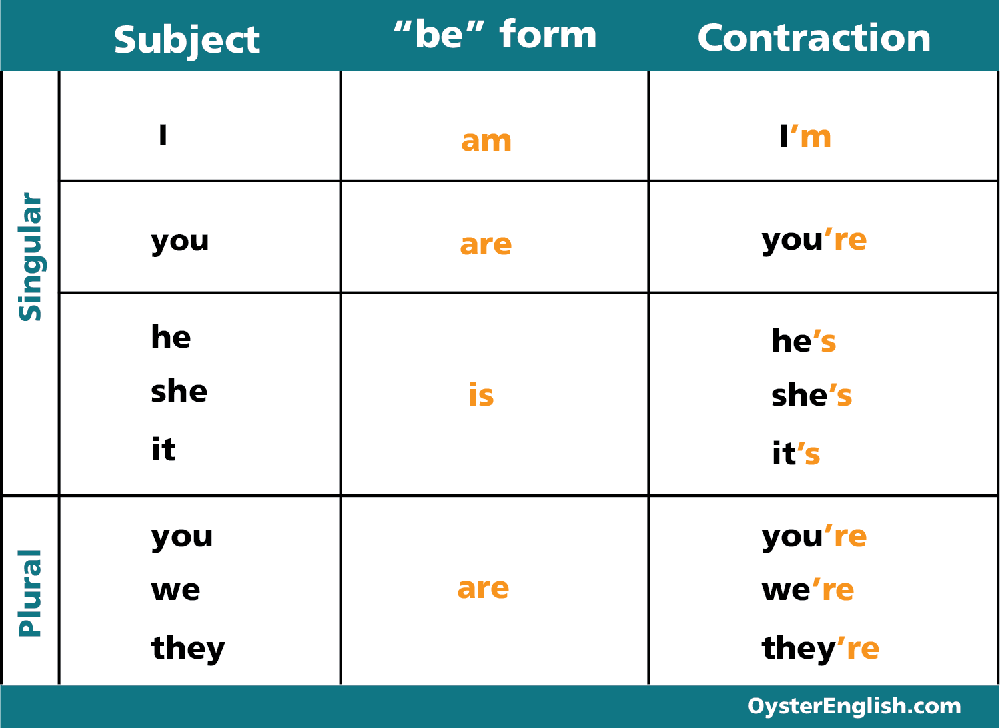

Introductions and greetings. Talking about
personal information, such as name, nationality, and occupation.
Expressing likes, dislikes, and preferences. Discussing daily routines and
leisure activities.
Talking About Personal Information
When meeting someone for the first time, it's common to exchange personal information. Here are some phrases you can use:
Greetings:
"Hi/Hello, my name is..."
"Nice to meet you."
"Pleased to meet you."
Introducing yourself:
"I'm from..." (country/city)
"I work as a..."
"I'm a student at..."
Asking about others:
"What's your name?"
"Where are you from?"
"What do you do?"
Example Usage:
"Hi, my name is John. Nice to meet you! Where are you from?"
Discussing Daily Routines and Leisure Activities
Talking about your daily routine and leisure activities can be a great way to get to know someone better. Here are some questions and phrases you can use:
Daily routines
"What time do you usually wake up/go to bed?"
"What do you do in the mornings/afternoons/ evenings?"
"Do you have any hobbies?"
Leisure activities
"What do you do for fun?"
"What do you like to do in your free time?"
"Do you play any sports?"
Example Conversation
Person A: What's your typical day like?
Person B: I usually wake up around 7 am, have breakfast, and then go to work. In the evenings, I like to relax and watch TV.
Person A: Do you have any hobbies?
Person B: Yeah, I love playing soccer and going to the movies.
be: present simple

Font: Oyster English
be: question Prepositions: in and near
Font: Woodward English
A/An
Font: Blogger
Tips About Unit 1
To learn more about this content,we recommend this trustworthy websites...
Learning and practicing numbers from 1 to 100. Counting and identifying
quantities. Talking about prices and money. Using numbers in various
contexts, such as time, dates, and phone numbers.
Learning and Practicing Numbers from 1 to 100
Numbers are essential for everyday communication. Let's start with the basics:
Talking about different occupations and professions. Discussing job
responsibilities and daily tasks. Describing work environments and
workplace culture. Talking about future career plans and aspirations.
Occupations and Professions
There are countless occupations and professions in the world, each with its unique set of responsibilities and challenges. Here are some common job titles:
Teacher
Doctor
Engineer
Lawyer
Nurse
Accountant
Artist
Musician
Chef
Police Officer
Firefighter
Pilot
Astronaut
Entrepreneur
When talking about your job or someone else's, you can use the following phrases:
"I work as a..."
"She's a..."
"He's employed as a..."
"What do you do for a living?"
"What's your profession?"
Job Responsibilities and Daily Tasks
Every job comes with a set of responsibilities and tasks that need to be completed. Here are some common examples:
Lawyer: advising clients, representing them in court, drafting legal documents, negotiating settlements
When discussing your daily tasks, you can use phrases like:
"I usually..."
"My responsibilities include..."
"I'm in charge of..."
"I spend most of my time..."
Work Environments and Workplace Culture
Work environments and workplace cultures can vary greatly depending on the company and industry. Some workplaces are more formal and structured, while others are more relaxed and casual. Here are some aspects of work environments and culture:
Dress code: formal, business casual, casual
Communication style: formal, informal, direct, indirect
Work-life balance: flexible hours, work-from-home options, paid time off
Company values: teamwork, innovation, customer service
When describing your workplace, you can use phrases like:
"The work environment is..."
"We have a very..." culture
"The company values..."
"My colleagues are..."
Future Career Plans and Aspirations
It's common to discuss your career goals and aspirations, whether you're just starting out or you've been working for years. Here are some phrases you can use:
"I'm hoping to..."
"I'd like to..."
"My goal is to..."
"I'm interested in pursuing a career in..."
You can also talk about your long-term career goals:
"I see myself..."
"I'm planning to..."
"I'm working towards..."
Remember, it's okay to change your mind and adjust your goals as you gain more experience and learn new things.
Present Simple: positive and questions (I/you)
Font: autoria própria
Present Simple: positive and questions (he/she/it/we/they)
Font: autoria própria
Present Simple: negative be: negative
Font: autoria própria
Tips About Unit 3
To learn more about this content,we recommend this trustworthy websites...


 Basic Preposiions of Place
Basic Preposiions of Place


 Simple Present Exercise: Sentences and Questions
Simple Present Exercise: Sentences and Questions